Dictating Me
免费开源语音输入
轻量运行 · 快速唤醒 · 准确转换 · 隐私安全
等待唤醒
正在记录
会议纪要.txt - 记事本
通用文字
任何人说出唤醒词
都能唤醒
语音匹配
比对你注册的声音
更少误触
声纹验证
只有你本人
才能唤醒
全部在本机完成
音频与文本不上传

github.com/DexterDreeeam/DictatingMe
▶ 播放全片
■ 停止
单段：
播放该段
音效
背景音乐
配音
录制时按
H
隐藏此栏 ·
空格
播放